ManHunt — social identity kit
One coherent identity across every platform: the Open Zone mark as the avatar (circular-crop safe), the drawn MANHUNT lockup on headers, and editable post templates that carry the provisional copy family. Extends design/brand/motion-kit — same radar algorithm, palette, lockup and OFL fonts; the banner surfaces already delivered there are reused below rather than duplicated.
Profile avatars — mark + animated radar
Same master art everywhere; every element sits inside 43 % of the square so a circular crop (dashed guide, radius 50 %) never clips it. The animated 512 GIF/WebM runs a 4 s loop: sweep arc, report pings, slow bearing-ring rotation.
New headers, covers and profile cards
Where a platform has no header upload (Instagram, TikTok) the closest real surface is delivered and labelled as such in the README — nothing is presented as a channel banner it cannot be.
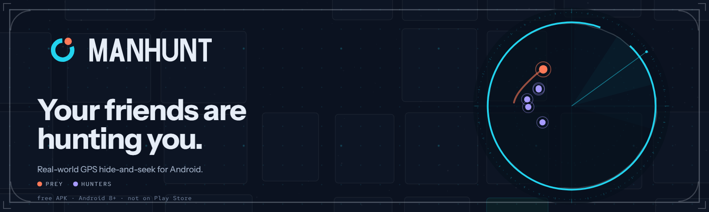
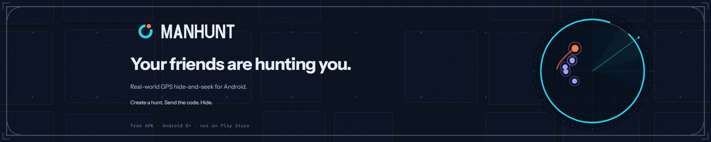
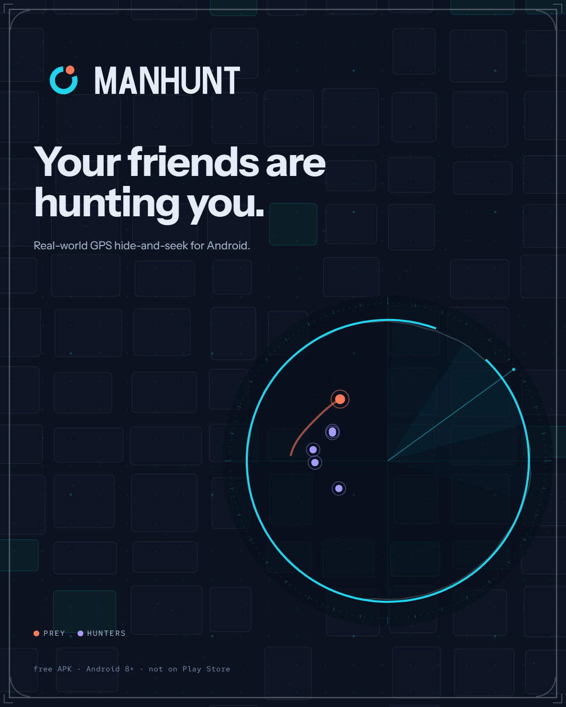
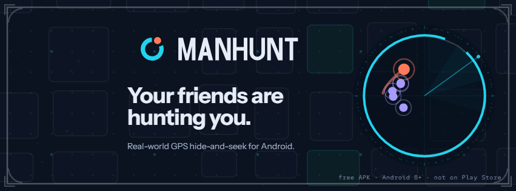
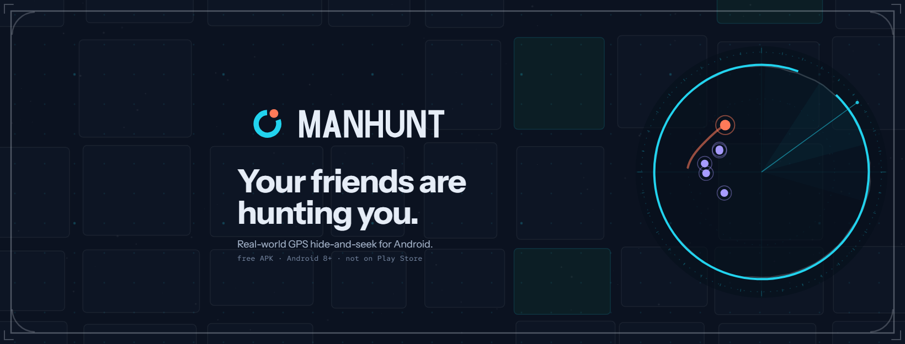
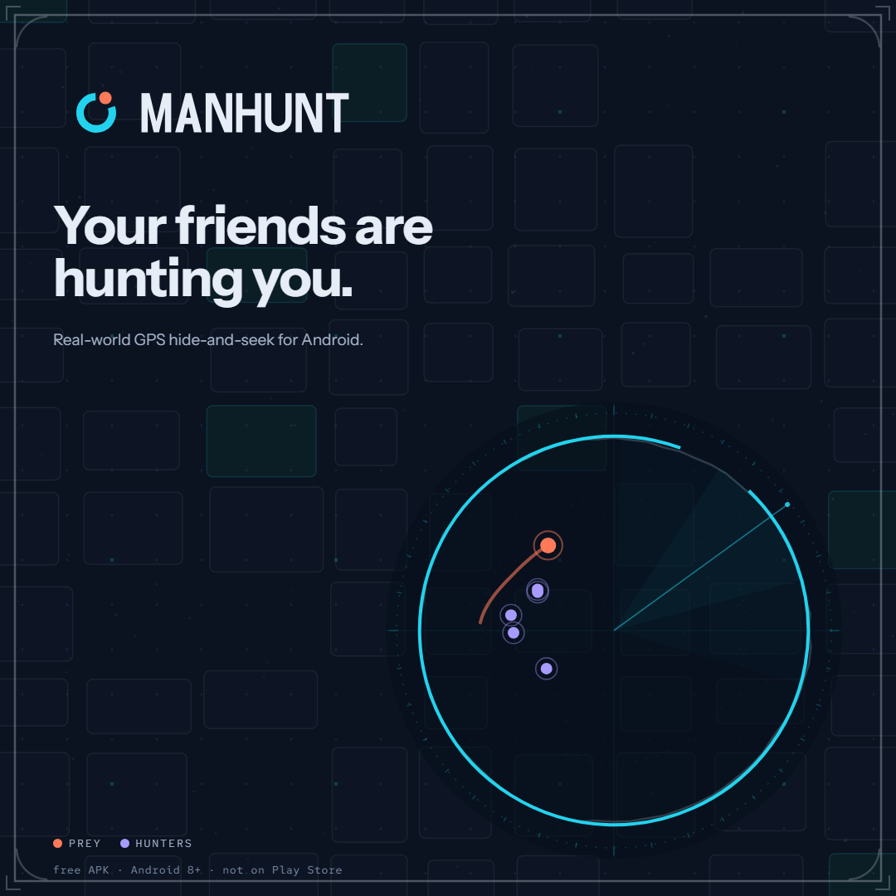
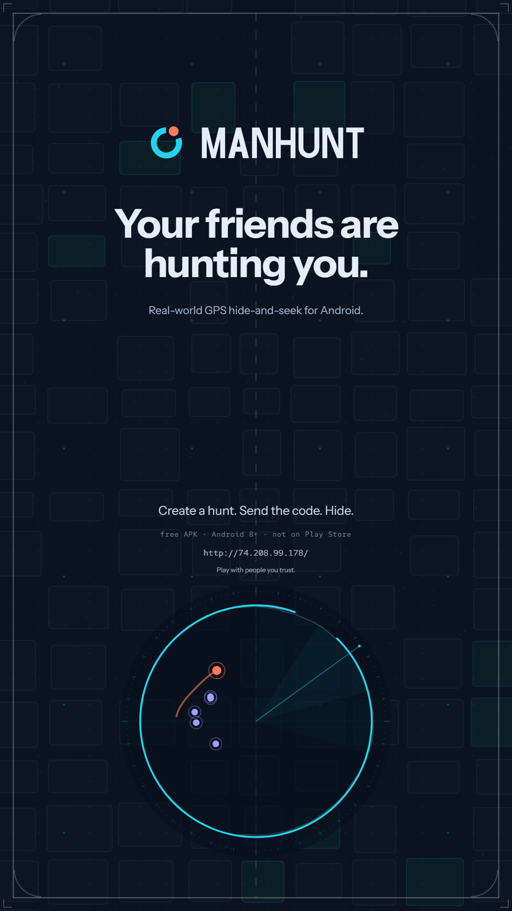
Reused from the motion kit (not duplicated)


Post templates — editable HTML/CSS
Copy lives in marked blocks inside each template; the rendered PNG is a cache of that edit. No redrawing is needed to change a line.
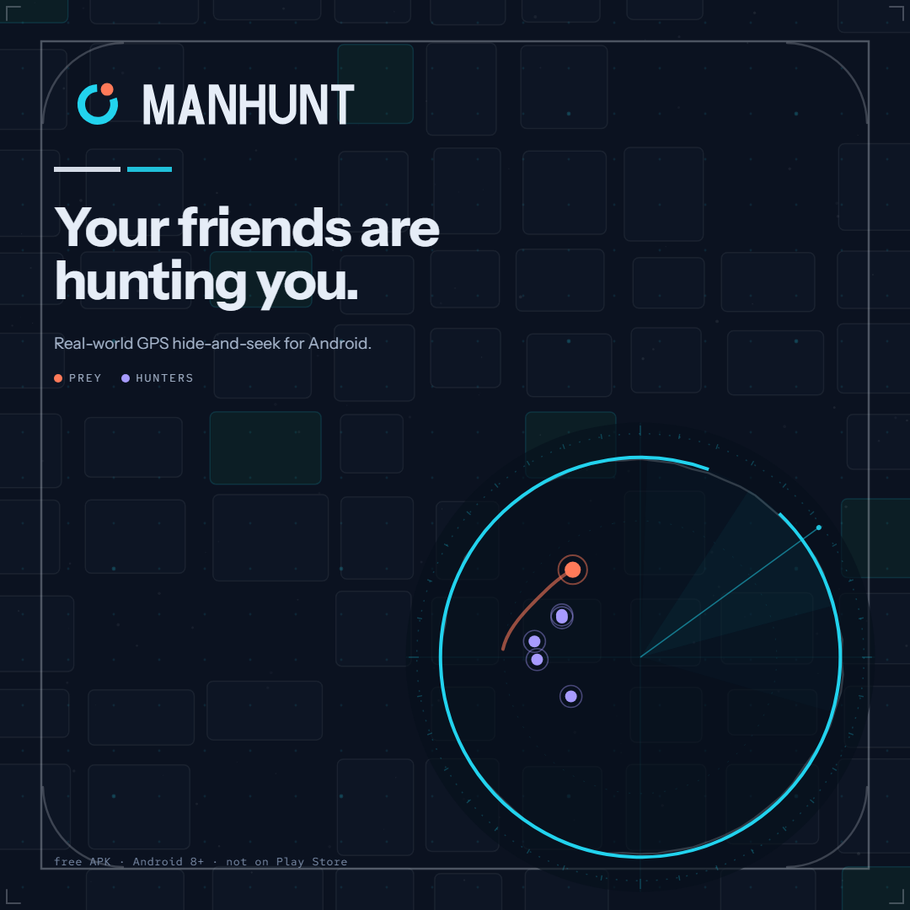
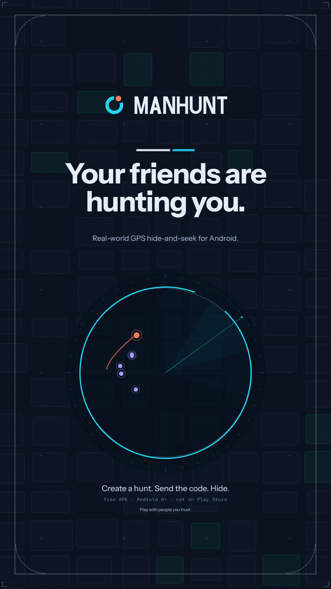
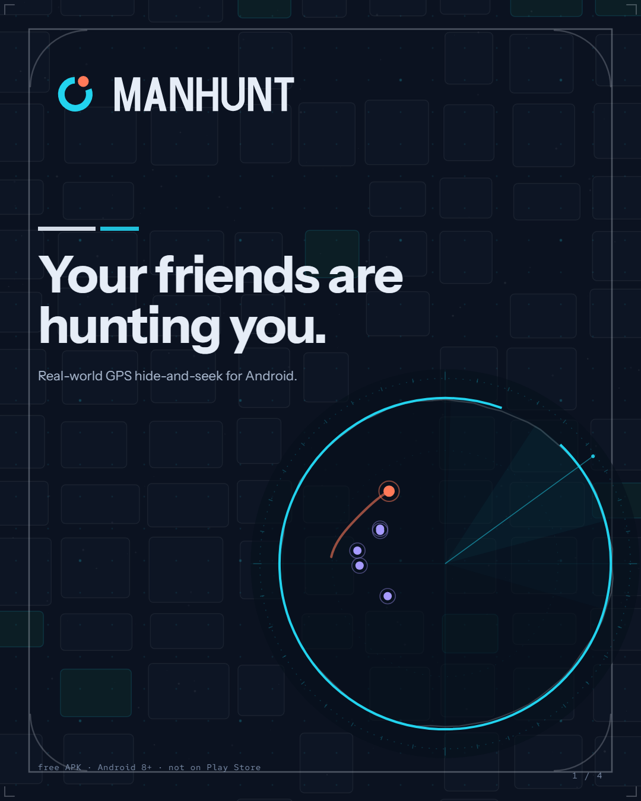
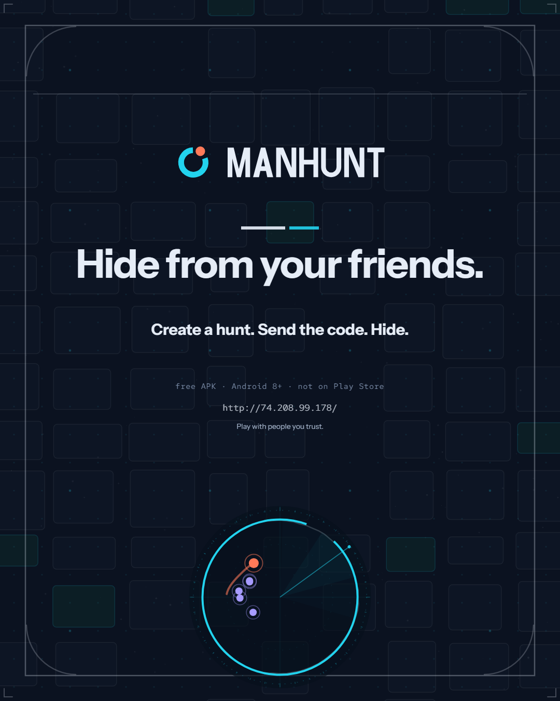
Crop-safe rules
Avatars: all art inside 43 % radius; circular crops at 50 % radius keep it intact — verified by pixel test on every avatar file.
YouTube: text inside 1546×423 safe area (motion kit).
X: avatar overlaps bottom-left; copy kept right of x≈190 (motion kit).
Reddit subreddit: mobile shows the centre 1280×384 — all copy sits inside it.
Facebook: profile cover reserves bottom-left for the avatar; page cover keeps copy in the centre.
Link-in-bio: buttons overlay the middle band; copy lives in the top 1200 px, bottom is decoration.
Upload flags
- Animated avatars: accepted by Discord and Telegram (GIF). X, GitHub, YouTube, TikTok, Reddit, Instagram display avatars statically — use the PNG there.
- WebM is not accepted as an avatar anywhere; it is the high-quality animated master for posts/embeds.
- Instagram / TikTok have no header upload — the cards here are the profile-adjacent surfaces, not fake banners.
- YouTube channel art and Discord banners are static uploads; the animated GIF/WebM variants in the motion kit are for posts.
- Copy is owner-approval-pending; edit the template COPY blocks, don't redraw.